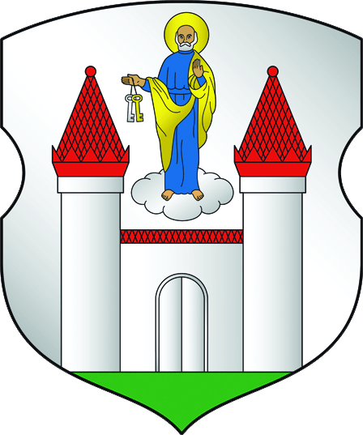
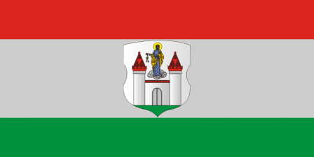

Бори́сов (бел. Бары́саў) — город в Минской области Республики Беларусь. Административный центр Борисовского района. Территория города — 46 км². Население города — 133 700 чел. (1 января 2026). Стоит на реке Березина, в 77 км от Минска. В 2002 году Борисов отметил 900-летие.
Герб утверждён решением Борисовского городского Совета депутатов от 29 декабря 1999 года № 16 и зарегистрирован в Гербовом матрикуле Республики Беларусь 23 мая 2000 года № 41. Флаг утверждён решением Борисовского городского Совета депутатов от 15 января 2001 года № 65 и зарегистрирован в Гербовом матрикуле Республики Беларусь 6 апреля 2001 года
Герб Борисова

Флаг Борисова

Первое упоминание в летописях В литовских летописях город Борисов упоминается 1102 годом: «В 1102 году князь Борис Всеславич ходил на ятвяг и, победя их, возвратясь, поставил град во своё имя…». Укреплённое поселение возникло на мысу-останце на левом берегу тогдашнего русла Березины в нынешнем агрогородке Старо-Борисов и названо именем полоцкого князя Бориса (Рогволда) Всеславича. Первое прямое упоминание о городе в Лаврентьевской летописи относится к 1127 году, а в Ипатьевской к 1128 году, как крепости Полоцкого княжества. Первый Борисовский детинец просуществовал до XIV века, когда сгорел в результате сильного пожара, о чём свидетельствуют археологические раскопки. Возникновение нового города Новый город возник на 4 км ниже по течению реки, к юго-востоку от первоначального расположения. На левом берегу Березины при слиянии с ней реки Схи на острове размером 200×300 м в XIV веке был построен деревянный замок, который просуществовал вплоть до XVIII века. Борисовский замок представлял собой деревянно-земляное укрепление, окружённое глубоким рвом с водой площадью около 2 га. Со временем постройки расширялись. В середине XIX века на месте сгнивших построек замка был построен новый — тюремный замок. В настоящий момент здесь располагается здание, относящееся к объектам историко-культурной ценности Беларуси, о чём свидетельствует установленный памятный знак. В составе Великого княжества Литовского Благодаря географическому положению уже к середине XIII века Борисов входит в число известных торгово-ремесленных центров. В конце XIII века Борисов вошел в состав Великого княжества Литовского. Числится в летописном «Списке русских городов дальних и ближних» (конец XIV века). В 1558 году была издана географическая карта Польского Королевства и Великого Княжества Литовского, на которой обозначен город Борисов. В 1563 году в соответствии с административно-территориальной реформой Борисовская волость была преобразована в Борисовское староство. 10 августа 1563 года Борисов получил от великого князя Сигизмунда Магдебургское право, освобождавшее жителей города от феодальных повинностей и дававшее им право на самоуправление. В составе Речи Посполитой С 1569 года, после подписания Люблинской унии, Борисов вплоть до XVIII века находился в пределах польско-литовского государства — Речи Посполитой. В 1662 году через город проезжал австрийский дипломат и путешественник Мейерберг Августин, который оставил описание архитектуры, быта жителей и окрестностей Борисова. Многочисленные войны неоднократно разоряли и опустошали Борисов. В начале XV века междоусобная борьба князей Ягайло, Жигимонта и Свидригайло почти полностью разрушила город. В июне 1655 года под Борисовом князь Юрий Барятинский во главе двухтысячного передового полка разбил отряд литовских войск. Во время войны России и Речи Посполитой 1654—1667 гг. его несколько раз занимали то русские войска, то войска Речи Посполитой. Серьёзно пострадал он и в годы Северной войны (1700—1721). В 1792 году король Станислав-Август объявил Борисов городом вольным от всякой земской юрисдикции и дал ему герб с изображением в белом поле ворот с двумя башнями, между которых стоит св. Апостолов Петр с ключами. В составе Российской империи В состав Российской империи вместе с Минском и белорусскими землями Борисов вошел после второго раздела Речи Посполитой в 1793 году, став уездным городом. 22 января 1796 года был утвержден герб города (закон № 17435), несколько отличавшийся от предыдущего. В верхней части щита — герб Минский. В нижней — герб, данный королём Станиславом Августом: две военные башни с воротами между ними, поставленными в серебряном поле, а над оными виден стоящий на облаке Святой Апостол Пётр, который в правой руке держит ключи от города. Герб символизировал стойкость, неприступность и открытый путь для добрососедства и торговли. В 1812 Борисов занят был французами и назначен главным городом особой подпрефектуры. Отечественная война 1812 года оставила глубокий след в истории города. Березинская переправа близ Борисова, по свидетельству историков, стала самой мрачной страницей истории войн Наполеона. Французы до сих пор употребляют слово «березина» (фр. Bérézina или bérézina) как синоним полного провала и катастрофы. Памятники у деревни Студенка и на Брилевском поле рассказывают о событиях 200-летней давности. В самом Борисове сохранились остатки артиллерийской батареи российских войск, построенные на правом берегу Березины накануне нашествия Наполеона. Батареи — первый исторический памятник в Борисове, взятый в 1926 под охрану государства. В 1985 году здесь установлен памятный знак. В 1840 году в Борисов было переведено одноклассное приходское училище из заштатного города Радошковичи. В XIX веке в Борисове работали спичечные фабрики «Виктория», «Березина» и стеклозавод. В 1912 году в Борисове основан небольшой лесопильный завод, который по сегодняшний день существует под названием «Борисовский лесопильный комбинат». В составе СССР В ноябре 1917 года в Борисове установлена Советская власть. С 1918 года город занят германскими войсками, но уже 2 декабря 1918 года после ухода немецких был занят войсками Советской России и вошёл в состав Белорусской Советской Социалистической Республики, а 27 февраля 1919 года в состав Литовско-Белорусской Советской Социалистической Республики. В 1919—1920 годах город был оккупирован польскими войсками. 18 марта 1921 года по Рижскому договору территория Белоруссии была поделена между Польшей и Белорусской ССР (независимость которой была признана Польшей), Борисов стал советским. С 17 июля 1924 года Борисов — центр района БССР. Борисовский голодный бунт 1932 года стал результатом провалов советского руководства в продовольственной политике, вызвал растерянность местных властей и привёл к частичной отмене непопулярных мер. На 1 сентября 1940 года в городе дислоцировались Борисовские автомобильное (в военном городке «Печи» (юго-западнее Ново-Борисова)) и кавалерийское училища. Кавалерийское училище было сформировано как Минское, но в связи с нехваткой казарменного фонда в Минске, летом 1940 года, военное училище было переведено в Борисов и получило наименование Борисовское кавучилище. С 14 февраля 1941 года согласно приказу Hародного Kомиссара Oбороны Союза ССР № 060 кавучилище переформировывается в бронетанковое, по штату № 17/21. Переформирование должно было быть завершено к 15 марта 1941 года. До начала войны Борисовское автомобильное училище было переведено в город Гомель. Великая Отечественная война Личный состав бронетанкового училища участвовал в оборонительных боях, за город, летом 1941 года. Согласно директиве Генерального штаба Красной Армии, от 3 июля 1941 года Борисовское бронетанковое училище эвакуировано в город Саратов, и переименовано в 3-е Саратовское БТУ. В период с 2 июля 1941 года по 1 июля 1944 года немецкими оккупационными властями в городе были созданы 6 лагерей смерти, в которых погибло более 33 тысяч человек. Еврейское население города было загнано нацистами в гетто и позже практически полностью уничтожено. Активное участие в убийстве евреев приняли местные полицаи. Так, переводчик группы армий «Центр» обер-вахмистр Зёинекен, шокированный увиденным, писал: Их везли к месту казни в русских машинах в сопровождении назначенных для этой цели людей из русской полиции безопасности Борисова. Поскольку их было недостаточно, то прислали подкрепление из Зембина и других отделов русской полиции безопасности. Её служащие носили красно-белые ленты на рукавах… Вечером выстрелы уже слышались не только из леса. Стреляли в самом гетто и почти на всех улицах города, потому что многие евреи, спасаясь, бежали из гетто и пытались там укрыться. В этот вечер и ночью из-за неразберихи даже немцам не рекомендовалось выходить на улицу, чтобы не попасть под пули русских полицейских. Полицейским выдали много спиртного, иначе они вряд ли сумели бы справиться с этим тяжелым заданием! Население Борисова считает, что люди из русской полиции присвоили ценности, оставленные евреями: золото, серебро, меха, ткани, кожу и прочее — как присваивали всё это и во время предыдущих расстрелов. Более того, говорят, что большинство этих полицейских — бывшие коммунисты. Но никто не отваживается донести на них, так все запуганы. В боях за освобождение Борисова в 1944 отличились войска 3-го Белорусского фронта, 13 воинских частей и соединений удостоены почетного наименования «Борисовских». На Борисовской земле 29 человек стали Героями Советского Союза, в том числе парторг танковой роты П. Н. Рак. В честь экипажа П. Рака в городе установлен памятник — танк ИС-2. В составе Республики Беларусь С 1991 года после распада СССР Борисов относится к Республике Беларусь. 31 июля 2006 года Борисовский район и город Борисов объединены в одну административно-территориальную единицу — Борисовский район с административным центром город Борисов[19]. В 2009 году в связи с празднованием 65-й годовщины освобождения Республики Беларусь от немецко-фашистских захватчиков и в целях увековечения подвига воинов Красной Армии, партизан и подпольщиков Борисов награждён вымпелом «За мужнасць і стойкасць у гады Вялікай Айчыннай вайны» (Указ Президента Республики Беларусь от 29 июня 2009 года № 355). В 2021 году Борисов объявлен Культурной столицей Республики Беларусь. Органы власти Представительным органом власти является Борисовский районный Совет депутатов. Он состоит из 34 человек и избирается жителями по одномандатным округам. Срок полномочий 4 года. Совет депутатов 29 созыва был избран 25 февраля 2024 года. Исполнительным и распорядительным органом власти является Борисовский районный исполнительный комитет. Улицы В городе представлено около 270 улиц. Самые протяжённые из них: Лопатина, III Интернационала, Гагарина, Чапаева, Красноармейская, Заводская, Сенная, Дымки, полка Нормандия-Неман, Днепровская, Даумана, Строителей. В городе один проспект — Революции Краткая информация 54°13′27″ с. ш. 28°30′43″ в. д. Страна Беларусь Область Минская Район Борисовский Председатель райисполкома Николай Николаевич Карпович История и география Основан 1102 Первое упоминание 1102 Площадь 46 км² Высота 173 м Тип климата умеренно-континентальный Часовой пояс UTC+3:00 Население 133 700 чел. (1 января 2026) Плотность 3109 чел./км² Национальности белорусы, русские, украинцы и др. Конфессии православные, католики, протестанты и др. Название жителей борисовча́нин, борисовча́нка, борисовча́не Цифровые идентификаторы Телефонный код +375 177 Почтовый индекс 222120 Автомобильный код 5 Награды Орден Отечественной войны I степени Реки Березина, Сха